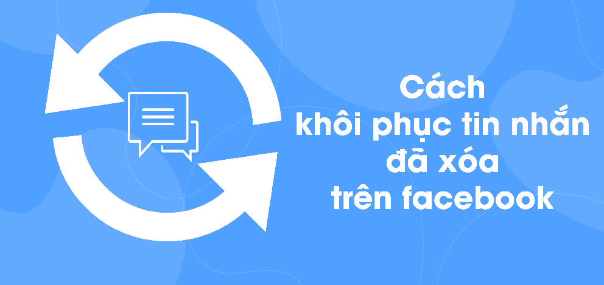

Cách khôi phục tin nhắn đã xóa trên Facebook Messenger cực nhanh

Ty Nguyen
CEO ❤️ AhaChat. Love babies & chatbot.
Bạn chẳng may lỡ tay xóa những tin nhắn quan trọng trên Facebook Messenger hay muốn đọc lại những tin nhắn đã xóa trên Facebook. Lúc này, bạn đang lo lắng không biết làm thế nào để lấy lại những tin nhắn đã xóa trên facebook. Bài viết dưới đây hướng dẫn bạn cách lấy lại tin nhắn đã xóa trên Facebook cực đơn giản bằng điện thoại và máy tính, giải đáp những băn khoăn lo lắng của bạn, đừng bỏ lỡ nhé!
1. Cách lấy lại tin nhắn đã xóa trên Facebook bằng máy tính
Để lấy lại tin nhắn đã xoá trên Facebook bằng máy tính, bạn thực hiện theo các bước hướng dẫn dưới đây:
Bước 1: Đầu tiên, bạn cần đăng nhập vào tài khoản Facebook thông qua trình duyệt web. Tại giao diện trang chủ sau khi đăng nhập, bạn bấm vào biểu tượng tam giác ngược ở góc phải màn hình như hình dưới, rồi bấm chọn Cài đặt.
Bước 2: Tại giao diện mục Cài đặt, bạn bấm chọn vào mục Thông tin của bạn trên Facebook ở menu bên trái.
Bước 3: Sau khi bấm vào mục Thông tin của bạn trên Facebook, xuất hiện mục Tải thông tin của bạn xuống ở phía bên phải màn hình, bạn bấm vào Xem.
Bước 4: Tiếp theo đó, bạn chọn khoảng thời gian bạn muốn khôi phục lấy lại thông tin. Sau khi đã chọn được khoảng ngày, bạn bấm vào Tạo file.
Bước 5: Sau khi bạn bấm vào Tạo file, bạn bấm tiếp sang mục Bản sao hiện có để đợi Facebook tải file.
Bước 6: Khi file bạn muốn tải đã xuất hiện, bạn bấm vào Tải xuống.
Tại đây, để tải được file về máy tính, bạn cần phải nhập mật khẩu của tài khoản Facebook đó.
Bước 7: Sau khi file đã được tải về máy tính, bạn vào mục download tìm đến file có tên facebook-....zip, bạn cần phải giải nén cho file này. Sau khi giải nén xong, bạn tìm đến file với tên messages rồi chọn vào file dữ liệu có đuôi .html để lấy lại các tin nhắn đã xóa trên Facebook.
Chỉ với những thao tác đơn giản bạn đã có thể lấy lại được tin nhắn đã xóa trên Facebook bằng máy tính thành công.
2. Cách lấy lại tin nhắn đã xóa trên Facebook bằng điện thoại
Cách lấy lại tin nhắn đã xóa trên Facebook bằng điện thoại, bạn có thể thực hiện được trên cả hệ điều hành IOS hoặc Android. Các bước hướng dẫn như sau:
Bước 1: Mở ứng dụng Facebook trên điện thoại, sau đó đăng nhập vào tài khoản Facebook cần lấy lại tin nhắn đã xoá. Tại giao diện trang chủ, bạn bấm vào biểu tượng 3 gạch ngang ở phía dưới góc phải màn hình.
Bước 2: Sau đó kéo xuống dưới và bấm chọn vào mục Cài đặt & quyền riêng tư, rồi tiếp tục bấm chọn vào mục Cài đặt.
Bước 3: Tại giao diện mục Cài đặt, bạn kéo xuống dưới tìm đến mục Tải thông tin của bạn xuống.
Bước 4: Sau khi bấm vào mục Tải thông tin của bạn xuống, nếu chỉ muốn lấy lại tin nhắn đã xoá, bạn bỏ tích những mục không cần thiết và chỉ để lại mục Tin nhắn, rồi kéo xuống phía dưới cùng bấm vào Tạo file.
Bước 5: Facebook thông báo đến bạn quá trình tạo bản sao khôi phục lại tin nhắn đã xóa trên facebook. Khi quá trình hoàn tất, bạn bấm vào nút Tải xuống để tiến hành khôi phục lại tin nhắn đã xoá.
Bước 6: Khi bạn bấm vào nút Tải xuống, bạn vào mục danh sách dữ liệu được tải về điện thoại, bạn tìm đến file có dạng facebook-....zip và giải nén cho file dữ liệu này.
Bước 7: Sau khi giải nén thành công, bạn tìm đến thư mục Messenger và chọn cuộc hội thoại muốn khôi phục lại tin nhắn đã xóa trên Facebook. Lúc này sẽ có file với đuôi .html xuất hiện, bạn bấm chọn vào file dữ liệu này, ngay lập tức xuất hiện các đoạn hội thoại, nội dung cuộc trò chuyện bạn đã xóa trước đó để bạn khôi phục.
Bài viết trên đây đã hướng dẫn bạn cách lấy lại tin nhắn đã xóa trên facebook bằng điện thoại và máy tính. Trong quá trình thực hiện nếu bạn vẫn gặp khó khăn thì đừng ngần ngại để lại bình luận ở dưới đây để chúng tôi hỗ trợ hướng dẫn cho bạn nhé. Hy vọng bài viết hữu ích đối với bạn, chúc bạn thực hiện thành công!